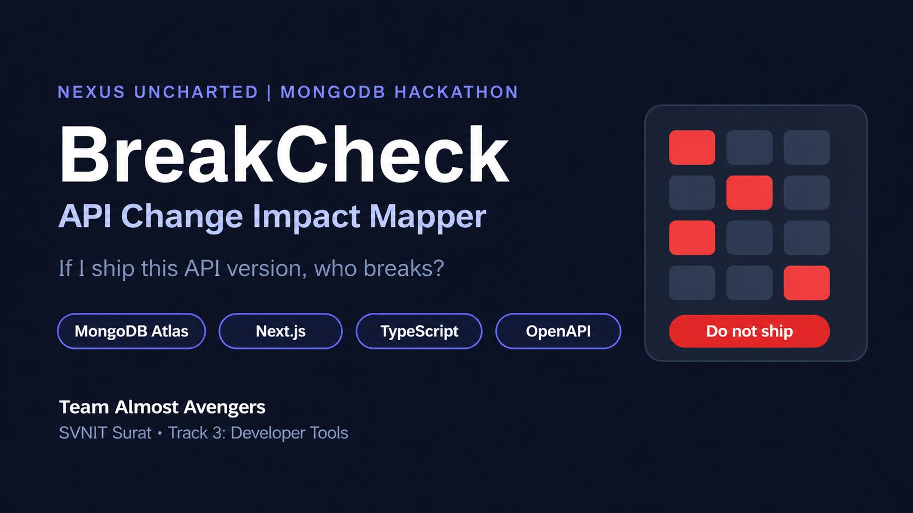

Project · Oct 2026 · NEXUS UNCHARTED Hackathon
BreakCheck: API Change Impact Mapper
If I ship this API version, who breaks?

About the project
Who depends on the change?
When an API changes, a normal diff tool shows what changed but not who depends on it. Breakages are found after release and fixed in a panic. BreakCheck compares two OpenAPI spec versions, classifies every change as breaking, risky or safe, and maps each one to the real consumers that use that endpoint or field. It then gives a verdict (Do not ship, Ship with caution or Safe to ship) and a migration to-do list per team. It is deterministic, with no AI model involved, so the same input always gives the same answer.
Key features
- Change classification: breaking, risky or safe
- Consumer impact matrix: only teams that really use the change are flagged
- Ship verdict and per-team migration tasks
- Risk ranking and release trend over time
- Live activity feed, Markdown export and PR-comment summary
- Command-line tool with exit codes for CI pipelines
- MongoDB Atlas
- Next.js
- TypeScript
- Tailwind CSS
- Recharts
- OpenAPI
- Vercel
Video
Watch the demo
Documents
Read more
Slides
PDF · 1.3 MB
Project overview
PDF · 121 KB
How to access and run it
PDF · 121 KB
Built by Team Almost Avengers (Harsheel Kumar Sahoo, Dhruv Papaiya, Tanishka Jethani), SVNIT Surat, for the NEXUS UNCHARTED MongoDB Student Hackathon, Track 3: Developer Tools for Production Use Cases.